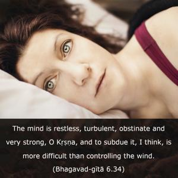
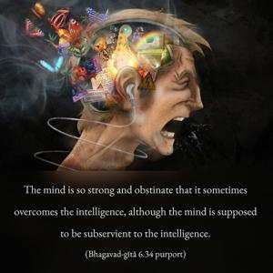
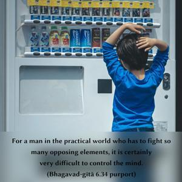
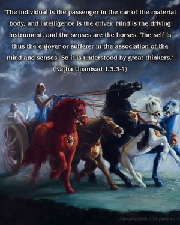

The mind is restless, turbulent, obstinate and very strong, O Kṛṣṇa, and to subdue it, I think, is more difficult than controlling the wind.




The mind is so strong and obstinate that it sometimes overcomes the intelligence, although the mind is supposed to be subservient to the intelligence. For a man in the practical world who has to fight so many opposing elements, it is certainly very difficult to control the mind. Artificially, one may establish a mental equilibrium toward both friend and enemy, but ultimately no worldly man can do so, for this is more difficult than controlling the raging wind. In the Vedic literature (Kaṭha Upaniṣad 1.3.3–4) it is said:
ātmānaṁ rathinaṁ viddhi
śarīraṁ ratham eva ca
buddhiṁ tu sārathiṁ viddhi
manaḥ pragraham eva ca
indriyāṇi hayān āhur
viṣayāṁs teṣu gocarān
ātmendriya-mano-yuktaṁ
bhoktety āhur manīṣiṇaḥ
“The individual is the passenger in the car of the material body, and intelligence is the driver. Mind is the driving instrument, and the senses are the horses. The self is thus the enjoyer or sufferer in the association of the mind and senses. So it is understood by great thinkers.” Intelligence is supposed to direct the mind, but the mind is so strong and obstinate that it often overcomes even one’s own intelligence, as an acute infection may surpass the efficacy of medicine. Such a strong mind is supposed to be controlled by the practice of yoga, but such practice is never practical for a worldly person like Arjuna. And what can we say of modern man? The simile used here is appropriate: one cannot capture the blowing wind. And it is even more difficult to capture the turbulent mind. The easiest way to control the mind, as suggested by Lord Caitanya, is chanting “Hare Kṛṣṇa,” the great mantra for deliverance, in all humility. The method prescribed is sa vai manaḥ kṛṣṇa-padāravindayoḥ: one must engage one’s mind fully in Kṛṣṇa. Only then will there remain no other engagements to agitate the mind.